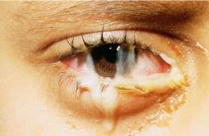

Conjunctiva · Bacterial conjunctivitis
Mucopurulent conjunctivitis (MPC)
Definition: It is an acute infective conjunctivitis characterized by hyperemia and mucopurulent discharge.
Etiology
- Predisposing factors:
- Bad hygiene and contaminated environment (poor sanitation).
- Causative organisms:
- Koch-Week's bacillus (80 %) (Haemophilus aegyptius): Common in Egypt during April, May, June, September and October.
- Other organisms (20 %): Staph., Strept., Pneumococi., ....etc .
